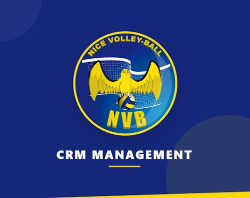

Semaine intensive · Projet SLAM / SISR · Classe IRIS 1 · 2025 – 2026
CRM interne — Nice Volley-Ball
Prototype de dashboard pour centraliser les données de la billetterie, des contacts et améliorer la communication du club.
Contexte
Le Nice Volley-Ball utilise aujourd'hui plusieurs outils séparés : Weezevent pour la billetterie, Brevo pour les newsletters et les contacts, des fichiers Excel ou Google Sheets pour certains suivis manuels, ainsi que des outils institutionnels comme l'extranet de la FFVB. Ces outils sont utiles pris séparément, mais ils ne communiquent pas suffisamment entre eux.
Problématique
Le problème principal est la dispersion des données. Le club ne dispose pas d'une vision claire du parcours d'un supporter : première venue, nombre de matchs vus, intérêt pour les abonnements, présence en famille, potentiel merchandising, réaction aux campagnes ou retour après un événement. Les communications restent trop générales et les relances ne sont pas assez automatisées.
Répartition des rôles
Étudiants SLAM
Rôle principal sur le projet : connexion à l'API Weezevent, stockage des données, interface de consultation du dashboard, indicateurs, segmentation des contacts et synchronisation avec l'API Brevo.
Étudiants SISR
Rôle important sur l'environnement technique : déploiement, sécurité, sauvegardes, automatisations et documentation d'exploitation.
Mon rôle
En tant qu'étudiant SLAM, j'ai été placé dans le rôle de développeur backend, responsable de l'intégration des APIs et de la gestion des données.
Visualisation des réalisations
